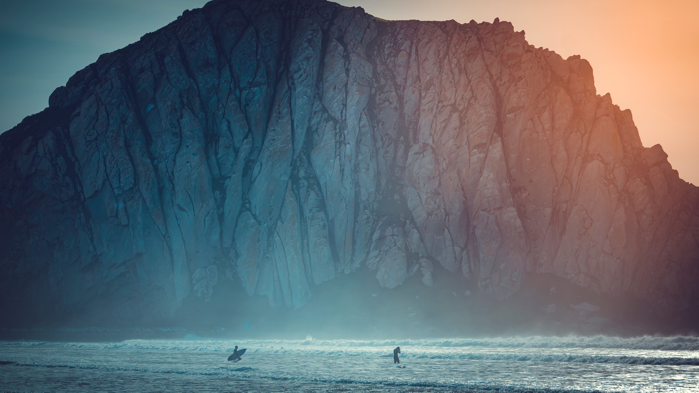

Wildlife traditionally refers to undomesticated animal species, but has come to include all organisms that grow or live wild in an area without being introduced by humans. Wildlife was also synonymous to game: those birds and mammals that were hunted for sport...
Plant Trees
Tree-planting is the process of transplanting tree seedlings, generally for forestry, land reclamation, or landscaping purpose. It differs from the transplantation of larger trees in arboriculture, and from the lower cost but slower and less reliable distribution of tree seeds...

Clean Ocean
The Ocean Cleanup is a nonprofit engineering environmental organization based in the Netherlands, that develops technology to extract plastic pollution from the oceans and intercept it in rivers before it can reach the ocean...